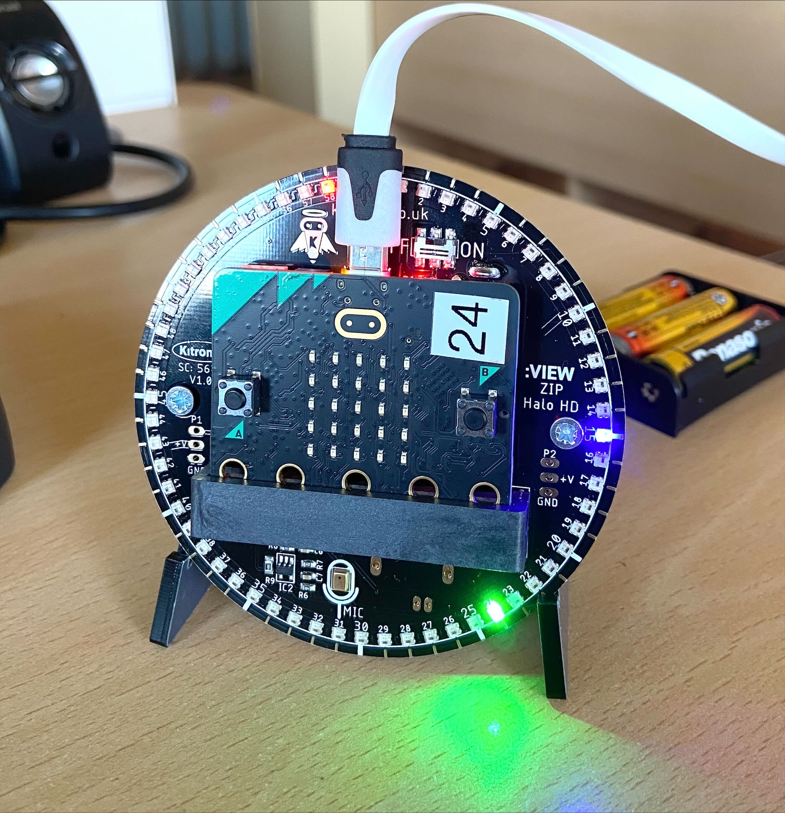
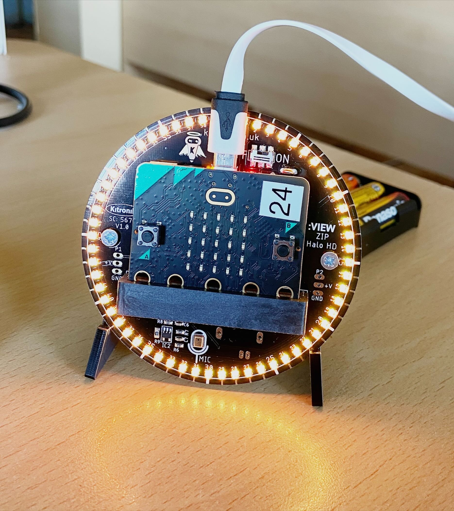

<!DOCTYPE html>
<html>
  <head>
    <meta charset="utf-8">
    <meta name="viewport" content="width=device-width">
    <title>Smartscape Alarm</title>
    <link rel="icon" href="symbole.PNG" type="image/PNG">
    <link href="style.css" rel="stylesheet" type="text/css" />

    <!-- bootstrap core -->
    <link
      rel="stylesheet"
      href="https://maxcdn.bootstrapcdn.com/bootstrap/4.0.0/css/bootstrap.min.css"
      integrity="sha384-Gn5384xqQ1aoWXA+058RXPxPg6fy4IWvTNh0E263XmFcJlSAwiGgFAW/dAiS6JXm"
      crossorigin="anonymous"
    />

    <!-- custom fonts -->
    <link rel="preconnect" href="https://fonts.googleapis.com">
    <link rel="preconnect" href="https://fonts.gstatic.com" crossorigin>
    <link href="https://fonts.googleapis.com/css2?family=Montserrat:wght@300&display=swap" rel="stylesheet">

</html>
<body>
  <!-- navigation bar at top -->
<nav class="navbar navbar-expand-lg navbar-light bg-light">
  <a class="navbar-brand" href="#">Smartscape</a>

  <div id="navbarSupportedContent">
    <ul class="navbar-nav mr-auto">
      <li class="nav-item">
        <a class="nav-link" href="index.html">Home</a>
      </li>
      <li class="nav-item">
        <a class="nav-link" href="about.html">About Us</a>
      </li>
       <li class="nav-item active">
        <a class="nav-link" href="setup.html">Set Up<span class="sr-only">(current)</span></a>
      </li>
      <li class="nav-item">
        <a class="nav-link" href="view.html">Your Alarm</a>
      </li>
    </ul>
  </div>
</nav>
  <!-- end nav -->

<div class="container-fluid">
  <a href="index.html" class="btn btn-primary">Back</a>
  <div class="row">
   <div class="col-md-12 mx-auto">
     <h2> How to set up your alarm </h2>
    <div class="row">
      <div class="col-6">
        <article>
          <h3> 1. </h3>
          <p>
           Plug the microbit into your computer USB drive and flip the 'on' switch. You should then see the LEDs light up! The red LED shows the seconds, the green LED shows the minutes and the blue LED shows the hours. You can read it like a normal clock.
          </p>
          <h3> 2. </h3>
          <p>
           Set the time by pressing A and B buttons together. By pressing A again, you will change the minutes by one. By pressing B, you will change the minutes by 10. Use this to set the current time. Press A+B when you are finished
           </p>
           <h3> 3. </h3>
          <p>
           Set your alarm time by pressing B once. Using the same controls, set the time you would like to wake up at. Finalize again by pressing A+B
           </p>
          <h3> 4. </h3>
          You're all done! Keep your device attached to your computer, but you can turn the alarm off from this website.
           </article>
       </div>
      <div class="row">
          <div class="col-6">
            <article>
              <p>
                <div></div>
              <br></br>
              <div></div>
              </p>
            </article>
          </div>
     </div>
      </div>
    </div>
  </div>
</div>

      <script src="https://www.gstatic.com/firebasejs/8.10.0/firebase-app.js"></script>
  <script src="https://www.gstatic.com/firebasejs/8.10.0/firebase-database.js"></script>

        <script src="/firebaseCommands.js"></script>
      <script src="/script.js"></script>
  
  </body>